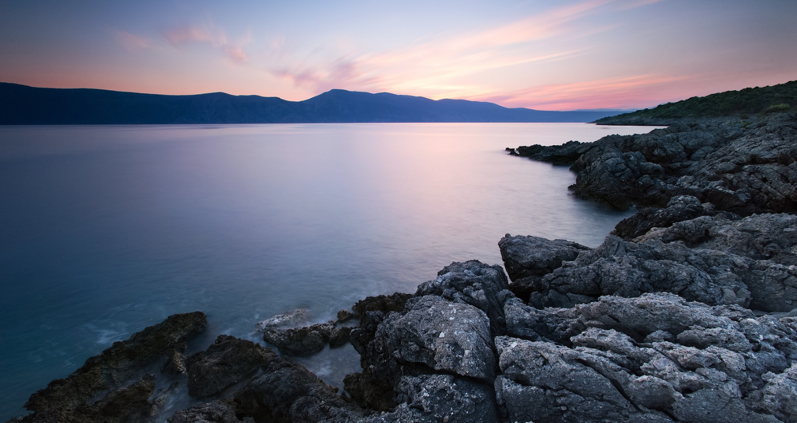

Introduction
According to Wikipedia, in academic publishing, a scientific journal is a periodical publication intended to further the progress of science, usually by reporting new research. There are thousands of scientific journals in publication, and many more have been published at various points in the past (see list of scientific journals). Most journals are highly specialized, although some of the oldest journals such as Nature publish articles and scientific papers across a wide range.
Species A
According to Wikipedia, in academic publishing, a scientific journal is a periodical publication intended to further the progress of science, usually by reporting new research. There are thousands of scientific journals in publication, and many more have been published.
Species B
According to Wikipedia, in academic publishing, a scientific journal is a periodical publication intended to further the progress of science, usually by reporting new research. There are thousands of scientific journals in publication, and many more have been published.